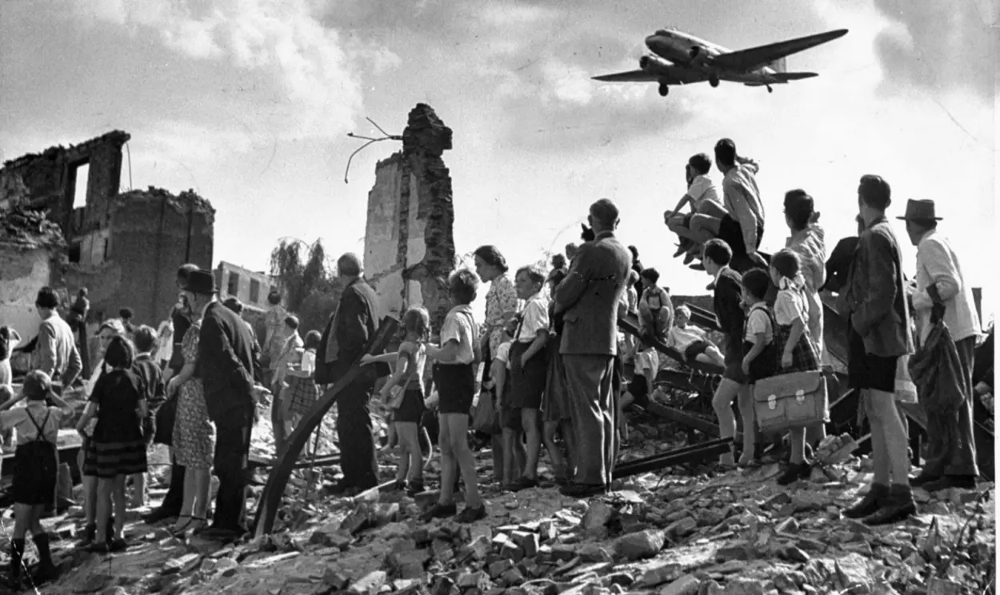
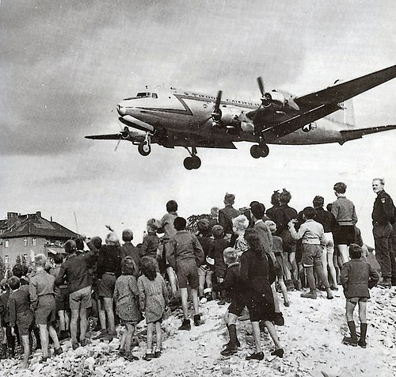
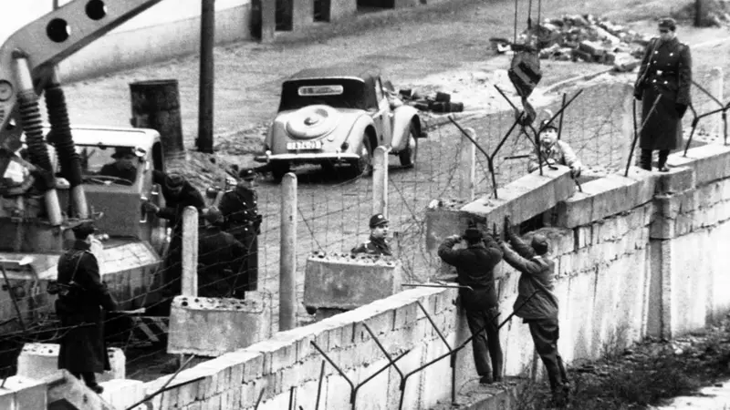
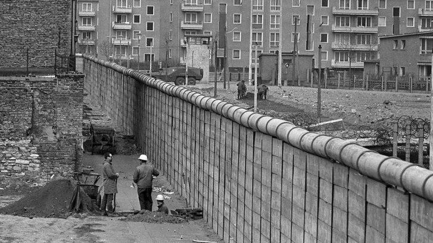
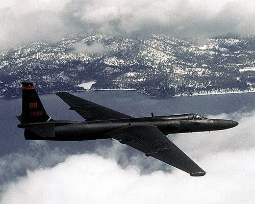
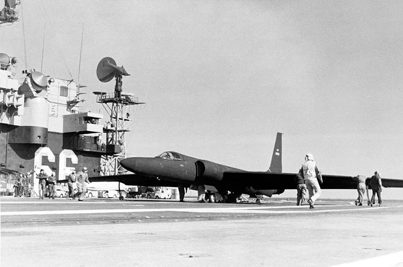

Crises Diplomáticas
A Guerra Fria criou um clima de forte tensão internacional, marcado pelo receio constante de um conflito aberto entre os Estados Unidos e a União Soviética. A posse de armamentos nucleares e termonucleares por esses países tornava essa possibilidade muito assustadora, pois um confronto direto poderia causar a aniquilação da humanidade. Ao longo das décadas, ocorreram diversas crises diplomáticas que quase levaram o mundo a um conflito nuclear, momentos de alta tensão política que envolveram espionagem, ameaças e disputas estratégicas entre as duas superpotências.
Principais Crises Diplomáticas:
Bloqueio de Berlim (1948–1949)
Construção do Muro de Berlim (1961)
Caso do avião U-2 (1960)
A União Soviética tentou forçar as potências ocidentais a abandonarem Berlim Ocidental bloqueando todas as rotas terrestres e aquáticas para a cidade. A intenção era tomar o controle total de Berlim, consolidando a influência soviética na região. Em resposta, os Estados Unidos e seus aliados organizaram a famosa ponte aérea de Berlim, enviando suprimentos essenciais por via aérea durante quase um ano, com milhares de voos transportando alimentos, combustível e outros itens vitais para os berlinenses. Essa operação bem-sucedida desafiou a tentativa soviética de isolamento e manteve Berlim Ocidental livre.
 Em 1961, a Alemanha Oriental, apoiada pela URSS, construiu o Muro de Berlim para cercar Berlim Ocidental e impedir a fuga de cidadãos do lado comunista para o lado capitalista. O muro tornou-se um dos símbolos mais claros da divisão do mundo durante a Guerra Fria, representando a polarização ideológica e política entre os blocos liderados por EUA e URSS.
 Um incidente de espionagem agravou ainda mais as tensões: um avião espião americano U-2 foi abatido no espaço aéreo soviético enquanto realizava uma missão de reconhecimento. O piloto, Francis Gary Powers, foi capturado e condenado à prisão, o que levou ao cancelamento de uma importante conferência diplomática entre os dois países e aumentou a desconfiança mútua.
 